Украіна - держава у Cхідній та частково Центральній Європі. Охоплює
південний захід Східноєвропейської рівнини, частину Східних Карпат і
Кримські гори. Межує з Румунією й Молдовою на південному заході, з
Угорщиною, Словаччиною та Польщею на заході.
Станом на перепис 2001 року, населення України становило 48,4 мільйона
осіб.
Основне й корінне населення України —
УКРАЇНЦІ
Історія України є надзвичайно багатогранною та глибокою, охоплюючи тисячоліття розвитку народів, культур та традицій, які утворили сучасну українську націю. Починаючи з часів трипільської культури, яка існувала на українських землях ще в IV-III тисячолітті до нашої ери, на території України розвивалася одна з найстаріших цивілізацій Європи.
Згодом на цій землі виникла велика держава — Київська Русь. Київська Русь (IX-XII століття) стала однією з наймогутніших і найбагатших держав середньовічної Європи, а Київ був відомий як "мати міст руських". Вона стала центром християнства після хрещення князя Володимира у 988 році, що сприяло зміцненню культури, освіти й розвитку державності. Проте після розпаду Київської Русі на початку XII століття українські землі зазнали низки іноземних вторгнень та окупацій. Монголо-татарська навала, польсько-литовська експансія, згодом — Річ Посполита, Османська імперія та Московія намагалися контролювати українські території.
Незламна боротьба за свободу й незалежність продовжувалася протягом століть. Визначним моментом стала козацька епоха, коли під проводом Богдана Хмельницького у 1648 році українці розпочали боротьбу за незалежність, що вилилася у створення козацької держави — Війська Запорозького.
У ХХ столітті Україна пережила складний період під владою Російської імперії та Радянського Союзу. Голодомор 1932-1933 років, штучно організований радянською владою, забрав мільйони життів українців. Проте навіть у таких жахливих умовах український народ зберіг свою мову, культуру та бажання до незалежності.
Нарешті, після тривалої боротьби, 24 серпня 1991 року Україна проголосила свою незалежність, і відтоді країна рухається до утвердження демократії та європейських цінностей.
ПРИКМЕТИ
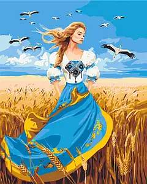Українська культура багата на прикмети, що передаються з покоління в покоління. Ось декілька з них:
- Якщо ластівки низько літають – чекай дощу.
- Якщо кіт миється лапкою за вухом — чекай на гостей.
- Якщо на Івана Купала сонячно — до багатого врожаю.
- Якщо дим із комина йде вниз — буде погана погода.
СТРАВИ
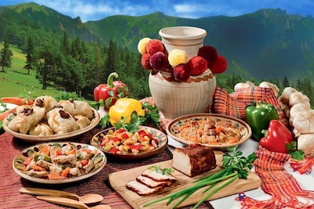Українська кухня настільки ж багата, як і її історія. Кожен регіон України має свої унікальні страви:
- Галичина: Вареники з картоплею і шкварками, бограч.
- Полтавщина: Галушки, борщ із вушками.
- Поділля: Вишукані м'ясні страви — ковбаси, печеня.
- Волинь: Картопляники з грибами, млинці з маком.
- Одещина: Риба під маринадом, фарширований карась.
- Закарпаття: Бограч, банош із бринзою та грибами.
- Чернігівщина: Славетний чернігівський борщ та свинячі ковбаси.
Україна складається з 24 областей, кожна з яких має свою культурну, історичну та природну унікальність. Ось список областей України:

- Вінницька область
- Волинська область
- Дніпропетровська область
- Донецька область
- Житомирська область
- Закарпатська область
- Запорізька область
- Івано-Франківська область
- Київська область
- Кіровоградська область
- Луганська область
- Львівська область
- Миколаївська область
- Одеська область
- Полтавська область
- Рівненська область
- Сумська область
- Тернопільська область
- Харківська область
- Херсонська область
- Хмельницька область
- Черкаська область
- Чернівецька область
- Чернігівська область
Окрім цього, є також:
- Автономна Республіка Крим (тимчасово окупована).
- Київ (столиця України, окремий адміністративний статус).
- Севастополь (місто з особливим статусом, тимчасово окуповане).
Кожна область має свої культурні традиції, визначні місця та особливості розвитку.
НАРОДНІ ДІЯЧІ
Українські народні діячі, які зробили значний внесок у розвиток культури, мистецтва, науки та політичного життя, залишаються знаковими постатями для сучасної України. Ось кілька таких відомих діячів:
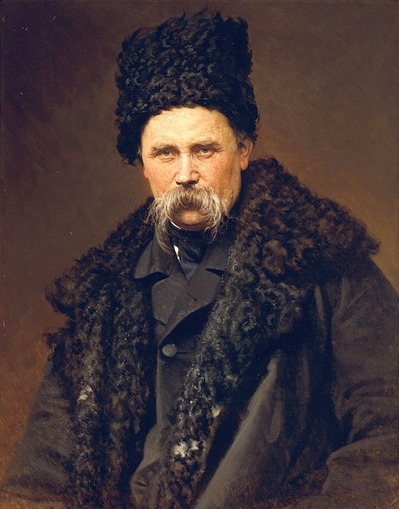Тарас Шевченко(1814–1861) Тарас Шевченко – найвідоміший український поет, художник та громадський діяч. Його творчість стала символом національного відродження України. Шевченко не лише писав поезії, але й виступав за незалежність та свободу українського народу. Його "Кобзар" став духовним надбанням українців.
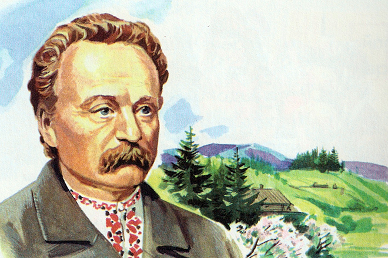Іван Франко(1856–1916) Видатний письменник, поет, філософ, громадський діяч та науковець, Іван Франко залишив значний слід у літературі та культурі України. Він боровся за права українців та розвиток національної ідеї. Його твори залишаються актуальними й сьогодні, особливо в контексті боротьби за незалежність України.
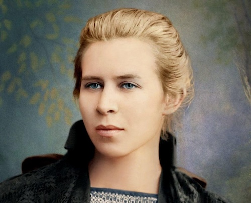Леся Українка(1871–1913) Леся Українка – одна з найвизначніших постатей української літератури. Вона була письменницею, поетесою та драматургом. Її твори, такі як "Лісова пісня" та "Камінний господар", продовжують надихати українців на боротьбу за свободу та незалежність. Її творчість пронизана ідеями волі, справедливості та гідності.
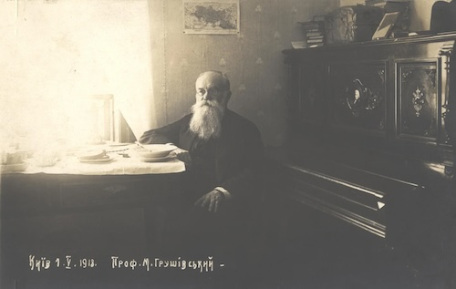Михайло Грушевський(1866–1934) Історик, політик, голова Центральної Ради та один із найвпливовіших інтелектуалів у період Української Народної Республіки (1917–1921). Михайло Грушевський написав фундаментальну працю "Історія України-Руси", яка заклала основи для національного самовизначення українського народу.
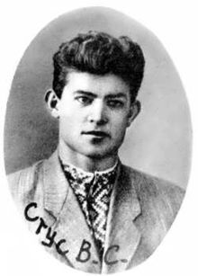Василь Стус(1938–1985) Поет, літературний критик та правозахисник, Василь Стус був одним із найвидатніших представників української дисидентської культури. Його боротьба за права людини та свободу слова зробила його символом опору радянській репресивній системі. Він загинув у радянських таборах, але його поезія й досі залишається важливим джерелом натхнення для сучасної України.
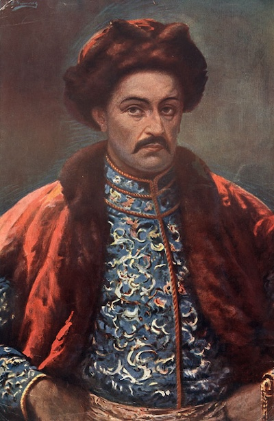
Іван Мазепа(1639–1709) Гетьман Війська Запорозького, який був одним із найбільш значущих політичних діячів свого часу. Мазепа відомий своєю спробою утвердити незалежність України від Московії, вступивши в союз зі шведським королем Карлом XII під час Північної війни. Він став символом боротьби за українську державність.
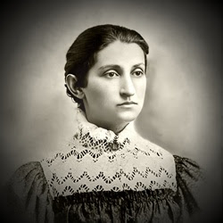Ольга Кобилянська(1863–1942) Відома українська письменниця та активістка, Ольга Кобилянська працювала в галузі прав жінок і розвитком української культури на Буковині. Її творчість була присвячена українському народові та проблемам соціальної справедливості.
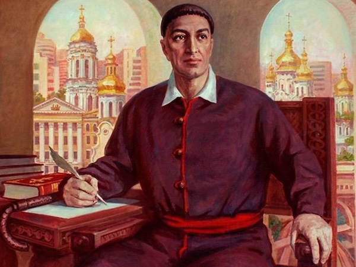Григорій Сковорода(1722–1794) Філософ, поет і педагог, Григорій Сковорода є одним із найвпливовіших мислителів в історії України. Його ідеї гармонії, свободи духу та самопізнання залишаються актуальними і сьогодні.
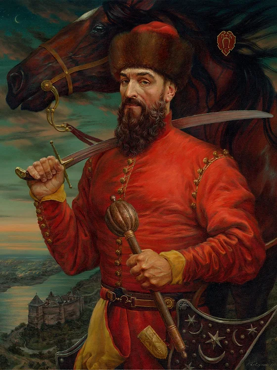Петро Сагайдачний(1582–1622) Гетьман українського козацтва, Петро Сагайдачний прославився своєю військовою майстерністю і внеском у боротьбу з Османською імперією та Московією. Він відстоював автономію України та розвивав козацьке військо.
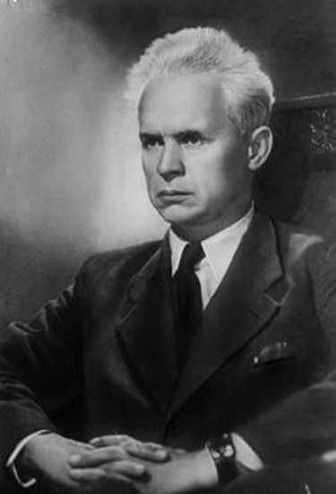Олександр Довженко(1894–1956) Видатний кінорежисер, письменник і художник, Олександр Довженко створив класичні фільми, такі як "Земля", які прославляють український народ і його боротьбу за свободу. Його творчість мала великий вплив на світове кіномистецтво.
ІСТОРІЯ ПРО ЗАКАРПАТСЬКУ ОБЛАСТЬ ТА ЇЇ УНІКАЛЬНІСТЬ
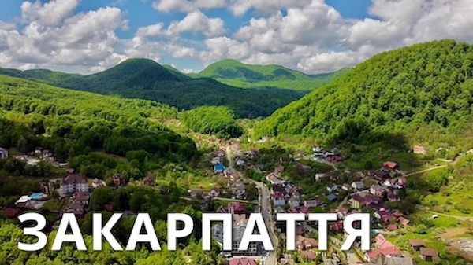
Закарпаття є особливим регіоном України, що розташований на
крайньому заході країни. Через свою географічну позицію, воно
історично підпадало під вплив різних культур: угорської,
австрійської, чеської та румунської. Закарпаття славиться своєю
мальовничою природою, виноградарством і багатою народною культурою.
Закарпаття вирізняється багатонаціональним складом населення, де
поряд живуть українці, угорці, словаки та румуни. Це вплинуло на
кухню та культурні традиції краю. Однією з найулюбленіших страв
регіону є бограч — угорський суп із яловичини та паприки, а також
банош — кукурудзяна каша з бринзою і шкварками, яка є символом
місцевої гуцульської кухні.
ВІЙНА ПРО ЯКУ ВАРТО ПАМʼЯТАТИ!
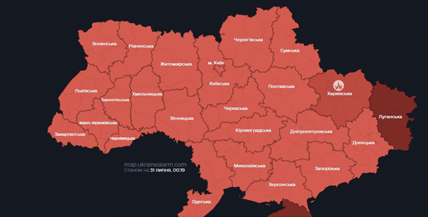Російсько-українська війна (з 2014)
Конфлікт в Україні, що розпочався в 2014 році, має серйозні і тривалі наслідки, зокрема великі втрати серед цивільного населення і військових. Після анексії Криму Росією і початку бойових дій на Донбасі, численні цивільні особи стали жертвами насильства. У 2022 році, після повномасштабного вторгнення Росії, ситуація ще більше ускладнилася.
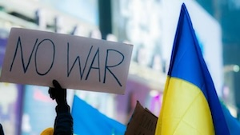З початку війни, загинуло кілька десятків тисяч цивільних осіб. Ці втрати стали результатом обстрілів, бомбардувань, мінометних атак та інших форм насильства. Вибухи, обстріли і бойові дії залишили численні міста в руїнах. Особливо важка ситуація склалася в таких містах, як Маріуполь, Сєвєродонецьк, Лисичанськ і Бахмут, де масштабні бої призвели до численних жертв серед мирного населення і значних руйнувань інфраструктури. Ці міста стали символами гуманітарної катастрофи, адже жителі були змушені жити в умовах нестачі продовольства, води та медикаментів.
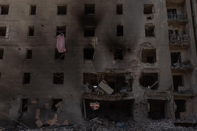Військові втрати також є величезними. З обох сторін конфлікту - українських сил та проросійських сепаратистів - загинуло тисячі солдатів. Для українських військових, які обороняють свою територію, ця війна стала справжнім випробуванням, з важкими боями і значними втратами в різних областях фронту. Сепаратистські формування, що отримують підтримку з боку Росії, також понесли численні втрати під час запеклих боїв за контроль над територіями.
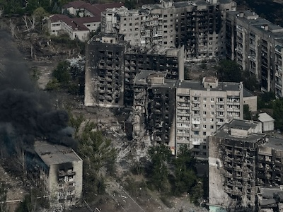Гуманітарні наслідки конфлікту величезні. Численні люди стали внутрішньо переміщеними особами, покинувши свої домівки через бойові дії. Багато з них стали біженцями, шукали притулок в інших країнах або в безпечніших частинах України. Ці переміщення викликали величезні потреби в гуманітарній допомозі, медичному лікуванні і підтримці.
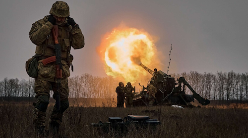Міжнародні організації, такі як ООН, постійно моніторять ситуацію і намагаються оцінити масштаби гуманітарної кризи. Вони надають допомогу, але через активні бойові дії і обмежений доступ до зони конфлікту точні дані про загальні втрати можуть варіюватися. В цілому, конфлікт в Україні призвів до трагедії не тільки через прямі наслідки війни, але і через тривалі соціальні та психологічні наслідки для постраждалих.